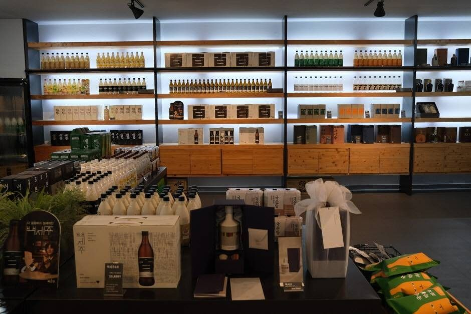
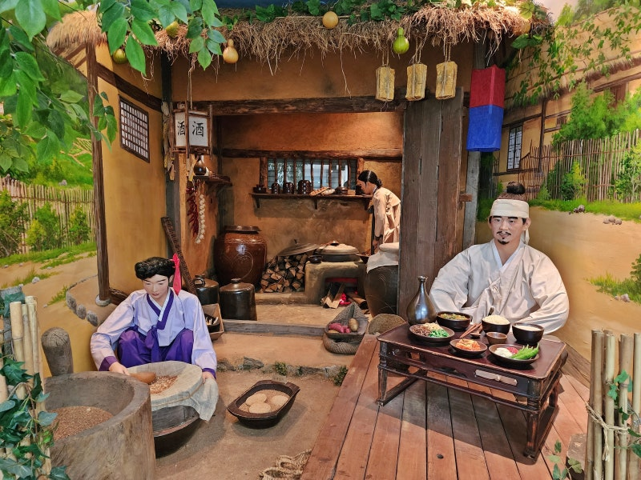
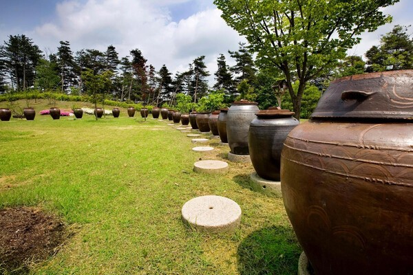

술을 빚기 전에
술을 빚기 전에
HOME > 회사소개 > 국순당소개
GREETINGS
안녕하십니까!
국순당입니다
먼저 저희 홈페이지를 방문해주신 여러분께 깊은 감사의 인사를 드립니다.
국순당은 지난 1952년 창업이래 우리 전통주의 근본인 누룩의 고유한 제조법을 계승, 발전시키는데 주력하여 현대인의 입맛에 맞게 끊임없이 개선해 왔습니다. 30년 전통의 부설연구소는 국내 유일의 전통 누룩 연구소로 전통주의 복원에 앞장서고 있습니다.
인삼, 구기자를 비롯한 12가지 한약재가 보약 반 첩만큼 들어 있는 백세주는 반세기 동안 전통주의 외길을 걸어온 저희 노력의 결정체로 여러분에게 자신 있게 권해 드리는 좋은 술입니다.
-
- 01계승
- 우리 전통주의 근본인 누룩의 고유한 제조법을 잇고, 현대인의 입맛에 맞게 끊임없이 다듬습니다.
-
- 02연구
- 국내 유일의 전통 누룩 연구소에서 잊혀진 우리술을 하나씩 되살리고 있습니다.
-
- 03세계화
- 한국을 대표하는 세계적 명주로, 우리술의 국제적인 표준을 만들어 갑니다.
-
- 우리술의 세계화,
명품화를 위해 - 백세주는 지난 2007년 2월 러시아 모스크바에서 열린 2007 프로드엑스포와 세계 3대 식품박람회의 하나인 상해SIAL에서 연이어 수상을 하는 등 우리술에 대한 해외의 관심이 뜨거워지고 있어, 이를 바탕으로 국순당은 우리 전통주의 해외판로는 물론 우리술의 세계화와 명품화를 위해 노력하고 있습니다.
- 국순당은 고객의 소리에 귀 기울이며 언제나 고객 여러분과 함께하는 열린 기업입니다. 저희 전 임직원은 시대의 흐름을 사전에 읽고 고객의 요구와 시장의 변화에 한발 앞서 대비해 백세주를 비롯한 예담차례주, 명作 시리즈 등 제품들의 효익과 서비스 가치를 극대화하고자 부단한 노력을 하고 있습니다.
- 또한, 백세주를 세계적인 명품 브랜드로 만들기 위해 차별화된 제품전략, 지속적인 품질향상과 관리의 과학화를 통한 우리술의 국제적인 표준을 만들어 나가고 있습니다. 전통을 바탕으로 한 혁신에 철저한 원칙 준수와 신뢰를 더해 주류·식음료 문화를 선도하는 기업으로서 당당히 세계시장에 우뚝 설 것을 여러분께 약속 드립니다.

- 우리술의 세계화,
-
- 전통주 분야
선도 기업으로서 - 일제강점기 등을 거치면서 잊혀진 우리술을 매월 한 품목씩 복원하는 '우리술 복원 사업'을 통해 다양한 우리술과 우리술 문화를 복원하는데 앞장서겠습니다.
- 앞으로도 국순당은 각국을 대표하는 명주들과 어깨를 나란히 하는 경쟁력 있는 제품으로써, 또한 우리를 대표하는 문화상품인 전통주를 세계에 알리는 기업으로서 위상을 더욱 높이기 위해 최선을 다하겠습니다.

- 전통주 분야

반세기 동안 걸어온
전통주의 외길